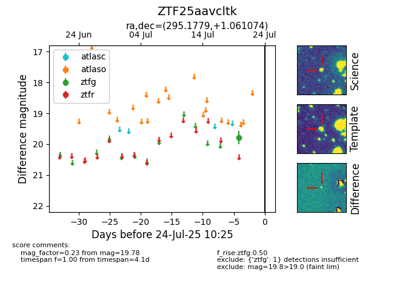

Target ZTF25aavcltk at 2025-07-24 10:25, see:
FINK: fink-portal.org/ZTF25aavcltk
Lasair: lasair-ztf.lsst.ac.uk/objects/ZTF25aavcltk
ALeRCE: alerce.online/object/ZTF25aavcltk
alt names
ZTF25aavcltk (ztf,fink)
coordinates:
equatorial (ra, dec) = (295.1779,+1.06107)
galactic (l, b) = (39.5739,-10.45114)
photometry
last ztfg=19.78
1 ztfg detections
